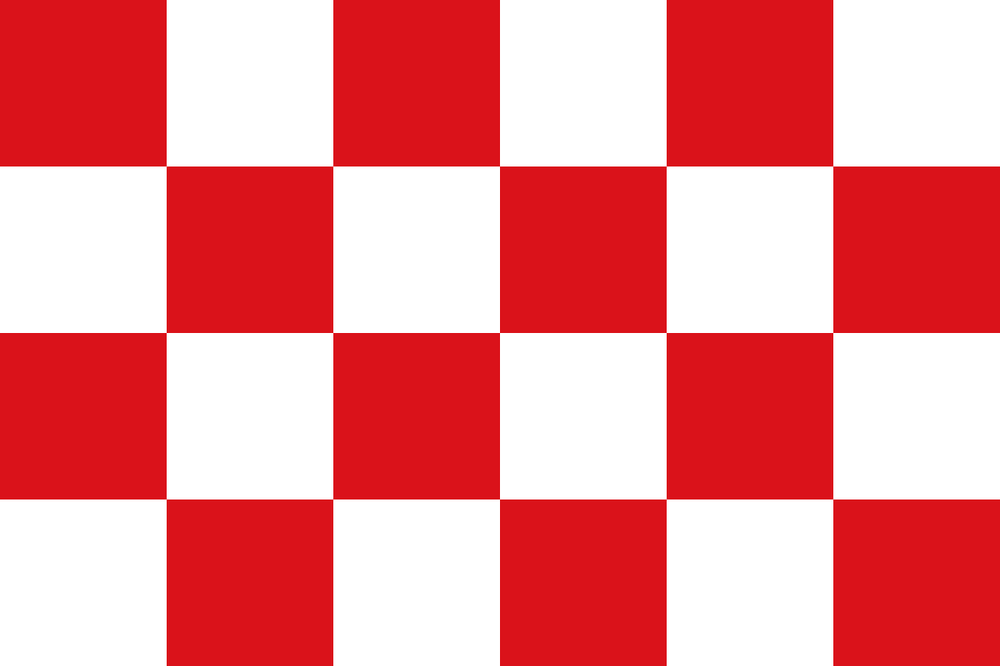

Home
Uitleg binair stelsel
Kleurmodellen
Zoeterwoude, een mooi dorp in de randstad. Het dorp bestaat uit 2 kanten, voor en over het spoor oftewel dorp en rijndijk. Het enige mooie in de rijndijk is de heineken fabriek
HTML Image
